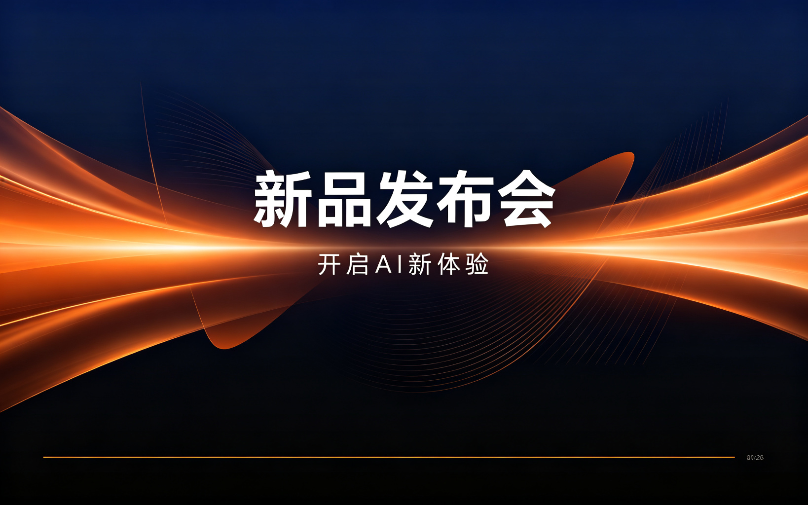

AionClaw 深度盘点：能直接交付成品文件的桌面级 AI 智能体到底有几把刷子
从任务执行能力、专家派单机制、本地安全保障到付费体系，系统性梳理 AionClaw 的完整能力面、亮点与局限，帮你判断它是不是你需要的那个 AI 搭档。
为什么要认真盘点一个 AI 智能体
现在市面上的 AI 工具太多了——聊天机器人、写作助手、代码补全、图像生成……每个都宣称自己能帮你提效，但真正用过一段时间后你会发现：大部分工具只能覆盖一个很窄的场景，而且都需要你自己把它们串起来才能完成一件完整的事。
去AionClaw官网快速过一遍产品介绍就能感觉到，AionClaw 的思路不太一样。它不是在某一个点上做深做透，而是试图做一个"能直接交付成品文件"的桌面级 AI 智能体——你说一句话下达任务，它自己拆解步骤、调用工具、执行操作，最后把 Word 文档、Excel 表格、PPT 演示稿、网站成品这些实实在在的文件交到你手上。
这个定位听起来很美好，但实际能不能打？我花了一段时间把它的能力面完整跑了一遍，下面从几个核心维度拆开来讲。

能力域一：任务执行的覆盖面到底有多广
AionClaw 官方给的场景清单很杂，从周报月报到短剧剧本都列了。我实际跑下来，它的能力大致可以归成五类：
文档类任务是它最稳的基本盘。周报、月报、会议纪要、推广方案、合同审查——这些日常办公中最机械、最耗时的任务，AionClaw 接手后能直接产出规范的 Word 或 PDF。合同审查这个场景我印象最深，它会逐段扫描合同文本，标出风险条款并给出修改建议，比自己对着模板一条一条核对效率高太多。

数据类任务表现也不错。清洗 Excel、生成图表、做数据透视，这些操作如果让一个纯聊天 AI 来做，它会给你一段 Python 代码让你自己跑；AionClaw 则是直接在本地打开文件、执行清洗、生成图表，最后把整理好的 Excel 和整套 PPT 一次性交付。对于每周都要做销售数据汇报的运营来说，这个环节能省掉大半个下午的工作量。
开发类任务偏原型向。让它做一个展示型网站或小程序的 MVP，它能自动生成前后端代码、部署到测试环境、甚至帮你调样式。但如果你要做生产级的复杂系统，它在架构设计和性能优化上的能力还跟不上——更适合用来快速验证想法，而不是直接当主力开发。
创作类任务覆盖面最广但质量波动也最大。短剧剧本和分镜、小红书抖音运营文案、小说散文写作，这些它都能接，但输出质量很依赖你给的提示词精度。短剧剧本的场景感和分镜描述有时候会出亮点，小红书文案则需要反复调整口吻才能自然。
电商类任务对中小卖家来说是个实用场景。批量抓取商品信息、整理订单库存、生成直播话术和客服回复模板——这些重复性的运营工作交给它，能把一个运营从后台数据堆里解放出来去做更重要的事。
能力域二：专家派单机制是它最有意思的设计
AionClaw 有个很独特的架构：内置了一批"数字专家"，系统会根据你的任务内容自动匹配合适的专家来接手。这个机制比我最初预想的要聪明得多。
它的派单流程大致是这样：先用轻量模型快速扫描你的输入，识别任务类型、行业领域、输出形式等关键信息，然后把这些信息和内置专家的领域标签做匹配打分，分最高的专家自动接手。比如你说"帮我整理 Q3 销售数据，按产品类别分组做柱形图对比"，系统会给数据分析师打 95 分、Excel 表格专家打 90 分，其他专家分数低得多，自然就是数据分析师接管。
如果几个专家分数接近，系统可能会建议你选择或者自动组合。跨专家协作是这个设计最出彩的地方——你说"写一份电商平台竞品分析报告，要包含数据图表和 PPT 演示稿"，营销增长专家接整体框架，数据分析师负责竞品数据收集和图表，Excel 表格专家处理原始数据的透视和公式，PPT 制作专家把最终结果排版成演示文稿。专家之间自动接力，上下文和素材会自动传递，不需要你在中间传话。
匹配不准的情况也会遇到。解决办法无非几个：把任务描述写得更具体、明确提到行业关键词、手动纠正一次让它记住你的偏好。实际用下来，手动纠正过一次之后，后续类似任务的匹配准确率会明显提升。
能力域三：本地执行与安全——敏感操作先确认
AionClaw 的所有任务都在本地电脑上执行，这个定位决定了它必须处理好安全问题。它的设计原则很清晰：读操作尽量自动化，写操作和破坏性操作必须人工确认。
具体来说，删除文件、上传到网络、运行脚本、执行系统命令、浏览器提交表单、调用外部 API、修改系统设置——这些操作一定会弹出确认窗口，告诉你"将要执行什么、涉及哪些路径、由哪个专家触发、原因是什么"，然后等你拍板。文件删除会列出要删的文件清单，脚本执行会展示完整源码让你看过再决定。
这个机制听起来很"烦人"——跑一个 10 步以上的复杂任务，每一步都弹窗，确实打断体验。但AionClaw文档里有更细的规则说明，你可以在设置里自定义：信任的任务来源可以设成静默执行，固定的定时任务链路也可以配好后整条放行。关键是，这个安全闸是可以调的，不是非此即彼。
能力域四：付费体系——按需选择别浪费钱
AionClaw下载装好就能跑免费版，AionClaw 的付费产品分三类：积分包、会员月卡年卡、云龙虾月卡。逻辑很简单：装软件免费、装技能免费，用 AI 干活按用量付费。
注册即送体验积分，每日登录还能领 200 积分，轻度用户基本不用花钱。中度用户（每天 3-10 个任务）建议会员月卡，重度用户（每天 10+ 任务或团队使用）建议年卡——年卡相当于 10 个月价，省 2 个月。云龙虾是单独的云执行环境，适合电脑关机也需要跑任务或者团队共享的场景。
一个实用建议：先跑两周免费版再决定要不要付费。记录每天消耗多少 Token，乘以 30 得到月消耗，再对比会员月卡价格——如果会员月费比你每月补的积分包便宜就值得买，否则继续免费版。
短板也要说
盘点下来，AionClaw 不是没有局限。
首先，它的能力再强，也还只是一个自动化执行者，不是真正的决策者。任务拆解依赖你说清楚目标，质量把关依赖你确认产出——如果你自己不知道要什么，它帮不了你想明白。
其次，跨专家协作虽然好用，但专家之间的上下文传递有时会丢失关键细节。一个 5 个专家接力的复杂任务，中间某一步可能会偏离你的原始意图，你需要盯着中间产物及时纠正。
第三，开发类任务停留在原型层。做 MVP 没问题，做生产级系统还不行，架构设计和性能优化的能力明显不足。
最后，积分消耗的透明度还有提升空间。有时候一个看起来很简单的任务消耗的积分比预期多不少，你需要跑一段时间才能建立起用量直觉。
什么样的人该用它
盘点下来，AionClaw 适合这样几类人：
每天被机械性文档任务淹没的上班族。周报月报、会议纪要、方案撰写——这些任务占据了太多本该用来思考和创造的时间。AionClaw 接手后能直接产出成品文件，你只需要改改就行。
需要持续产出内容的自媒体与短视频团队。短剧剧本、小红书文案、抖音脚本，这些高频创作任务如果全靠人脑硬想，很容易陷入内容枯竭。AionClaw 至少能帮你出第一版，把时间留给真正有创意的调整。
每周都要做数据汇报的电商运营和销售人员。清洗数据、生成图表、整理成 PPT——这条链路串起来能省掉大半个下午，而且质量比手动做还稳定。
如果你是纯技术开发者、需要做生产级系统，或者你的工作核心是创造性的决策而非执行，那 AionClaw 可能不是最适合你的那个 AI 工具。但如果你刚好在上面这几类画像里，值得认真跑两周免费版试试。它的相关资料在GitHub、Gitee和GitCode三个仓库都同步更新着，照顾不同平台偏好的用户。